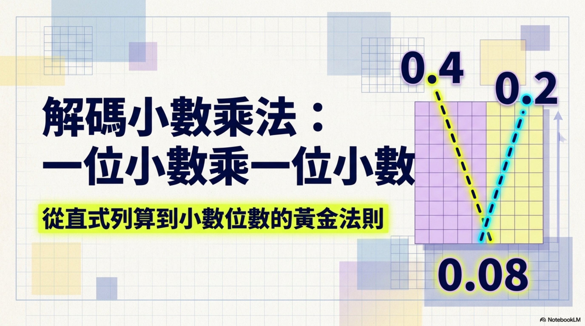

📗 第14課 · 簡報 1 — 一位小數 × 一位小數
← 返回第14課
🔇 自動講解：關
🎤 講這頁

🎯 答對這一頁的題目先可以過下一頁！
◀ 上一頁
1 / 10
下一頁 ▶
🎉 簡報 1 完成！快些去做預習 1！
📝 做預習 1
🔒
要回去由頭睇！
你在這一頁已經答錯
2 次
，要回去由第 1 頁重頭溫習，之前的題目要重新答。
不使擔心，慢慢睇、睇清楚，你一定做到 💪
🔁 返第 1 頁重新開始